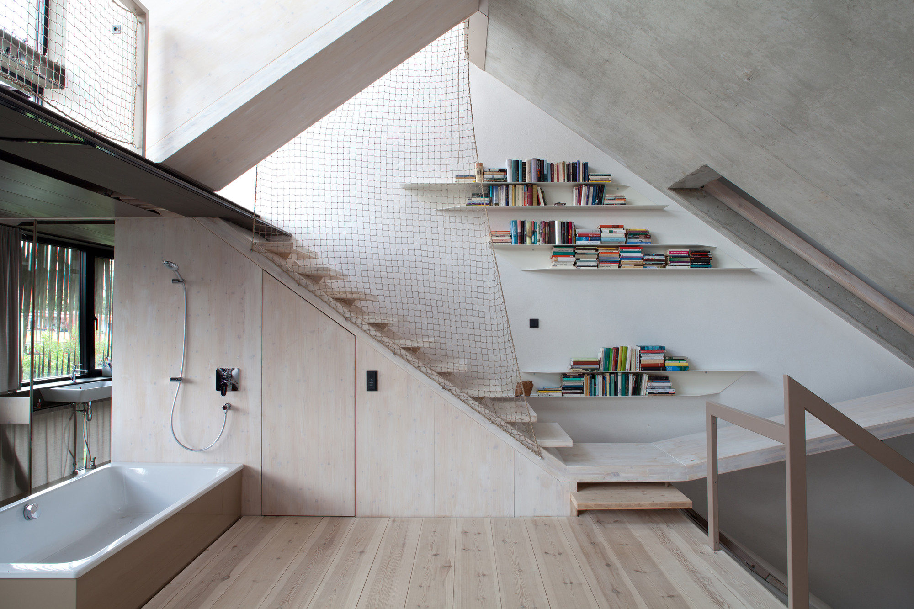

02 原始參考資料
本原型實際採用的資料與推估範圍，分列如下。可點原圖放大對照。
主要建模依據原刊縱向剖面 · B14_sec_n.jpg

圖面：XTH-berlin，刊載於 ArchDaily。本原型依這張圖描繪樓板與屋頂的縱向相對輪廓、錯層關係及樓梯走向；不是取得原始 CAD／BIM 後轉檔。
案例背景Townhouse B14 / XTH-berlin
ArchDaily 案例頁用於核對案例名稱、設計者及背景資訊。案例頁的其他照片與圖面，不表示全部均已被用於本模型的幾何重建。
開啟完整原案例 ↗
補充觀察 · 非建模尺寸依據原刊實景照片

攝影：© Anja Büchner / ArchDaily。這張照片供空間感受對照，未用來取得模型尺寸，也不能據此宣稱模型與實景完全吻合。
原刊照片圖頁 ↗
模型哪些部分有依據？
- 原圖可見
- 縱向的樓板與屋頂輪廓、活動平台高低關係、樓梯方向，以及原圖上的活動區文字。
- 相對描繪
- 以剖面影像的相對位置建立教學幾何；樓板厚度、踏階及邊界有簡化，並非逐一校核的實際尺寸。
- 明確推估
- 建築寬度、橫向空間分隔、樓梯寬度與橫向位置、外殼構成、家具尺寸及位置。水平剖面、橫剖面是這個教學模型的截面，不可當作原建築圖面。
- 未取得
- 實測資料、完整尺寸圖、原始 CAD／BIM 與施工詳圖。模型不適用於施工、淨高或法規驗證。
原圖著作權屬原權利人。本站為來源對照與教學原型，未表示取得公開再散布授權；公開再利用請另確認授權。